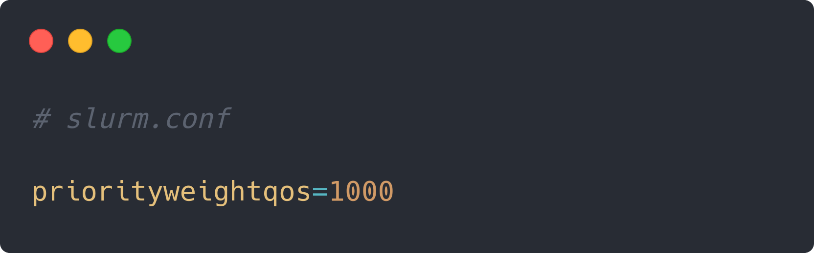

HPC & Data Infrastructure 2024/25 Final Assignment
Virtual Orfeo: integrating services
and features in a cluster's digital twin
Scientific and Data Intensive Computing • Andrea Esposito [SM3600005] • Roberta Lamberti [SM36xxxxx]
Data Science and Artificial Intelligence • Alberto Russo [SM38xxxxx]
01_CEPH: GOAL
- Deploying a virtualized CEPH cluster
creating and maintaining a quorum and adding storage for OSDs
- Creating OSDs, relevant CRUSH rules and pools
1 osd per node, 1 rule (HDD), 1 pool (replicated)
- Creating a Volume
using the created pool as data pool
- Mounting the CEPH filesystem on clients
exposing a shared filesystem
01_CEPH: IMPLEMENTATION
- Deployment through Ansible Playbooks
for a reproducible setup
- └─
01_nodes.yml creates and provisions 3 VMs with Vagrant
- └─
02_bootstrap.yml bootstraps the CEPH cluster with cephadm on the admin node
- └─
03_expand.yml expands the cluster linking other nodes
- └─
04_fs.yml creates the OSDs, CRUSH rule, replicated pool and filesystem
- └─
05_mount.yml generates and propagates secrets and configures fstab entry for automount
01_CEPH: RESULT
- 3 VMs
with attached HDD storage
- CEPH cluster
3 monitors, 3 OSDs (1 per node), 3 clients
- CEPH dashboard
showing cluster status, available on ceph0X:8443
- CEPH filesystem
automatically mounted on the clients
192.168.132.81,192.168.132.82,192.168.132.83:/ 96G 84M 96G 1% /mnt/testfs
02_SLURM: GOAL
- Implementing a debug Quality of Service
with high priority and resources constraints
- Applying the QOS on jobs to ensure
priority escalation
with the --qos flag when submitting a job
02_SLURM: NEEDED CONFIGURATION
Creating a QOS
# sacctmgr add qos zebra
Assigning a high priority to the QOS
# sacctmgr modify qos zebra set priority=10000
Assigning user(s) to the QOS
# sacctmgr modify user user00 set qos+=zebra
# sacctmgr modify account root set qos+=zebra
02_SLURM: NEEDED CONFIGURATION
Adjusting priority settings
via slurm.conf or ConfigMap

02_SLURM: OUR CONFIGURATION
# ZEBRA VS DEFAULT